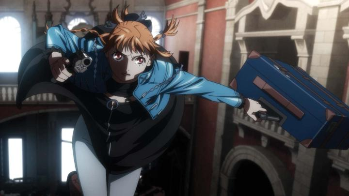

Yasuomi Umetsu is probably a name only hardcore otaku recognize. You might know what he's most famous for: the OVA "Kite" and "Mezzo Forte." From there, you probably have your own opinions due to their X-rated content. Personally, I've always been impressed with Umetsu's stylish direction and eye for bombastic action, both in these and later works (I kinda liked "Wizard Barristers" for example). In an already crowded Fall 2025 anime film schedule, Aniplex was pushing marketing for "Virgin Punk - Clockwork Girl," the first of a series of films by this lauded director, and apparently one that took nearly ten years to complete. It even got a full English dub and American theatrical release within a few months of the Japanese release, which says a lot. ... and it's only 35 minutes long. Some of the screenings list runtimes of about 85 minutes, but that includes a roundtable interview at the beginning, and a series of behind-the-scenes videos afterwards about the making of the film. This bonus content is longer than the film itself! For the short runtime, and since the interviewees (including the director) kept referring to this as "Episode 1," I refuse to classify this as a proper feature film. At best, it's a new OVA series (which traditionally also sometimes got limited theatrical releases), and depending on how a "complete set" is packaged, might easily be confused with a television-style series. At this time, there's no timeline for Episode 2 (more on that below), so I'll discuss this first film, "Clockwork Girl," as it is. The story takes place in a future where cyberpunk-like body augmentations and robotics are more commonplace. Ubu is a bright preteen at a loving orphanage, whose world is turned upside down when a bounty hunter, named "Mr. Elegance," barges in and kills the orphanage manager (claiming he was a criminal, but we're never given proof of this, and have to come to our own conclusions). Mr. Elegance has a thing for young girls, and offers Ubu a job to work for him: Ubu's response is to spit in his face. Years later, in her early twenties, Ubu is a professional bounty hunter herself, and very good at it, and still with a vendetta at Elegance for ruining her life. But when targeted by powerful criminal (and not aware of it), and after Ubu refuses Elegance's proposal yet again, Elegance shoots her for dead - if he can't have her, he won't let anyone else (namely the criminal shadow Ubu doesn't see). But this allows Elegance to transport her to a hospital, and transfer her brain to a fully-robotic humanoid body, and notably, one that matches her 13-year-old self from a decade prior, to suit Elegance's... tastes. And with an emergency shutdown button on a remote, Elegance can effectively have Ubu, who he now nicknames "Cherry," to do as he pleases, namely, to work for him as his company's best new bounty hunter. Those bonus videos show the approach to this project was to request of Umetsu to "go back to his roots," and thus, he did, for better or for worse. "Clockwork Girl" is not far removed from "Kite," complete with a cute, practically underage girl at the center required to enact violence, and a gross pervert adult acting as her carrier. There aren't any sex scenes this time, but there is nudity, including some extra detail to the "bounce" of some features. Much of that full nudity is of an underage Ubu, but hey, her brain is in her twenties, so it doesn't matter if her robot body is made to "look" like it's only 13, right? Right? Yeah... I had always assumed the "sex-sells" part of "Kite" and "Mezzo Forte" was just to sell more home-video copies, but it's hard to deny after this that maybe that was always this director's aesthetic all along. And sure, all the other characters call out Mr. Elegance for being a lolicon and pervert, but agreeing that it's gross doesn't make it any less gross to watch with a theatre crowd. It's unfortunate, since the brief appearance of the 20-something-year-old Ubu would have made for a cool adult protagonist... The intreviews also mention the director's choice to not include idle chatter or unneeded exposition. This episode is a lean 35 minutes, and could have supported a longer runtime. But what happens also only feels like the first part of a two or three-act story, complete with a cliffhanger ending appearance of an unintroduced character. By itself, "Clockwork Girl" is simply unsatisfying. It was strange to have both the director and producer go on about how impactful the story and writing of this film was... did they watch their finished product? Sure, the character dynamics and world are kinda interesting, but there's so much missing, I'd almost hestiate to say there WAS any story at all yet. At best, it's a prologue to something much bigger. That would be less of a concern if we knew for certain that more films in this "series" was coming. But from the interviews, the word "if" came up a lot. After an extended production, everyone seemed happy to just have this much finished at all, and there seemed to be no confirmation that a sequel had even started production yet. Respectfully, Umetsu isn't a young man, and I'm not certain he'd live to see the completion of a second film. If this is all we get, it's not much. Although, that would lend to "Clockwork Girl" the old-school aesthetic of anime OVA's, which might have been used to pitch a passion project in hopes that sales would fund the rest of the story, but often failed to do so. If you're a fan of obscure, practically lost-media OVA's, this might feel like a modern version of that. Curiously, the studio helming this film was Shaft, of "Bakemonogatari" fame, and not Studio ARMS or A1-Pictures as Umetsu had worked with in the past. Apparently, Umetsu gets around as a freelancer, and had a good working relationship from working on some opening credits with Shaft. They were patient to let the director take his time over the decade, but also, it sounded like the studio would let a handful of staff work on this when there were gaps between other scheduled projects. Shaft had an established style they relied on for nearly two decades, and they worked hard not to deploy that here - "Virgin Punk" looks like a Yasuomi Umetsu work through and through. And it mostly looks great, especially during the hand-to-hand combat and gun fights. The director's touch on finding ways to make the action stylish, clever, and all-around just plain cool is still here. But also, some parts felt oddly restrained, most notably in the opening minute, like everything was drawn on a 1080p digital canvas (and not downsampled from a higher resolution)... fine for a TV anime perhaps, but distracting on a theatre screen. And despite the director's old-school, draw everything by hand approach, some CGI for background effects (like birds in the sky) is used, and everywhere it's used, it looks bad. Overall, the movie looks like a TV anime from 2010... a very good looking one for the time, but hard to believe it was made in 2025 against all the other theatrical anime I've seen this year. Aside from the visuals, the music is kinda awesome, really elevating the punk-rock electric style "Virgin Punk" wants to represent. I saw the English dub, and they do an OK job given what the source material and character eccentricities are, but if only to fully complete the old-school OVA vibe, I'd recommend watching the Japanese dub instead. "Virgin Punk - Clockwork Girl" is an old-school homage to Japanese OVA's, and a particular treat for fans of "Kite." If you dislike "Kite" for its subject matter, you probably want to stay away. It's also style-over-substance with Yasuomi Umetsu's fingers in every aspect of production - I can't recommend it for the story just yet, but it's pretty darn cool.
- "Ani" More reviews can be found at : https://2danicritic.github.io/ Previous review: review_Violet_Evergarden_-_The_Movie Next review: review_Voices_of_a_Distant_Star